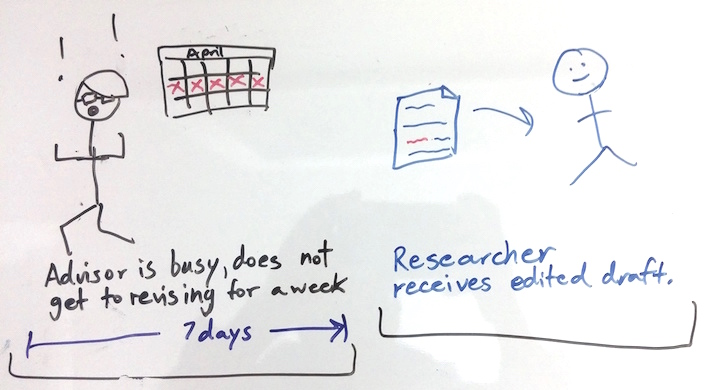

ShareLaTeX Collaboration App
Intro
One of my favorite collaboration tools is ShareLaTeX, but it's limited to use on a desktop. In this project, I explored what functionality might translate well to mobile, and how that would affect workflows. In the end, I arrived at some wireframes for a ShareLaTeX Mobile App.
What is ShareLaTeX?
Sharelatex is a collaborative, cloud-based, LaTeX editing tool that allows multiple users to simultaneously edit the same LaTeX document. LaTeX is often used by people in academia to write research papers by combining figures, captions, and paragraphs of text.
Simplifying Functionality for Mobile
The first, simple approach was to simply take ShareLaTeX, break it into tabs or swipable screens, and move it onto a mobile app. However, in initial mock-ups, I realized that editing precise syntax would be cumbersome and not the best use of mobile. I then shifted the question to be: "What might people use a ShareLaTeX app for that they wouldn't use the desktop version for?"
Receiving Feedback is a Slow Process
Looking at the process of editing a research paper on ShareLaTeX or any platform, a pain point becomes clear: receiving edits takes time. This is because even if a writer wants feedback on a tiny change, the writer needs to send their entire draft over. Editing an entire draft requires setting aside a large chunk of time. Large chunks of time are difficult to find in a busy schedule, so this impedes the feedback process.
A whole draft is sent.

Setting aside a couple hours to edit is difficult.
Process with a Mobile App.
What if instead, a writer could send edits over in pieces that could easily fit into the editor’s busy schedule? This would be valuable for questions related to the clarity of sentences and paragraphs.

The mobile platform allows for editing all the time. The advisor/editor can edit on the train or while waiting for a pot to boil. Time that would normally be idle can now be used more productively.

Primary Feature
The process would start after the user edits a piece of a paper. The user selects it to be shared as a "chunk." This "chunk" then shows up on the mobile app for reviewers to see. All changes and comments are tracked, showing up in the desktop version.
The opening page is where all "chunks" can be accessed. When a chunk is selected it can be edited.

The other main feature of the mobile app is the ability to view captions and figures together to edit captions.

Navigation
The page at the center of navigation is the home page where a user can keep track of the work for which teammates are seeking feedback.
Alignment with Users' Values
Users value efficiency, productivity, and learning. This app offers would appeal to users through these values by helping them incorporate feedback more regularly. If users can do this, they can apply their learning and produce better writing in less time.

Future Work
The main criticism I have heard is that users might lose a sense of context when making edits. To remedy that, it may be helpful to build into each chunk a way to read the context of the piece around it or have specific requests for feedback from the writer.
However, to keep future work focused it's important to remember that the goal of this app is not to supplant the desktop version, but supplement it. It's for those times between first and final drafts where you need quick, easy feedback. Beyond editing LaTeX files, this breaking up of work could probably be applied to other kinds of writing as well.